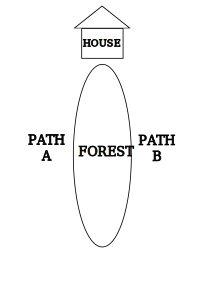

My mom told me a sad story. See diagram below. Two kids, a brother and a sister, living in Mexico. The brother told the sister "I will run on Path A. You will run on Path B. Whoever makes it home first wins the game." The brother won the game. The sister arrived home very late that night. Because as she was running, a man was hiding in the forest, and he kidnapped and raped her in the forest.
My mom said "Everyone knew who did it. But the entire town agreed to not report it. Because the man who did it was in the military, and they did not want to ruin his career." I don't know what I replied. But then my mom said "Actually, that reminds me. Jovanny, your uncle, you know the one who is a police officer, yeah, a long time ago, he did something so horrible to a girl, but I am not allowed to tell you, because it can ruin his career." I replied "What were their ages?" My mom replied "I believe they were both adults."

So there you have it. My uncle is a police officer, and there is rumor within my family, that he raped someone, but all the old women in my family agreed to protect my uncle.
My uncle, who is a police officer, who allegedly raped someone, yeah, he got a job promotion, moved to a mansion, next door to celebrities. My uncle has several children, but only one is a step-son named John Doe! John Doe's real father is a gangster. My uncle always feared John Doe might grow up to be a gangster too. So that's why my uncle raised John Doe like a military bootcamp. My uncle was actually in the military. So anyways, one day John Doe got drunk and died in a fucking car accident!! John Doe was less than 25 years old at death!! There is a GoFundMe and news articles. Sorry, can't post it.
It was John Doe's birthday, he was drinking and partying, his dad said "Son, bring me my truck early in the morning." John Doe woke up hungover, drove the truck, and died, and killed an innocent person.
John Doe's bestfriend didn't even go to the funeral, instead he went to Cancun Mexico and continued partying and drinking.
I told my family "My uncle is a big baller, rich, lives in a mansion, why does he need a GoFundMe for his son's funeral?" So already my family hates me because I even dared to ask that question. Meanwhile, I'm watching my dirt poor family scrambling to donate money. So finally I said "My uncle killed John Doe! My uncle did child abuse on John Doe! That's why John Doe turned into an alcoholic adult!" And my family got angry at me basically telling I should not ask those questions or even be thinking about those things.
One family member agreed with me and said "I am not going to the funeral. Your uncle and his wife hate me. A long time ago, I witnessed your uncle's wife was beating up John Doe. I threatened to call Child Protective Services. Finally, our neighbors called Child Protective Services for John Doe. Our neighbors were evil people, so for our neighbors to call Child Protective Services, that really means something, whatever they saw, it must have been very bad. Your uncle and his wife think it was me who called CPS, but it wasn't me, it was our neighbors. So that's why they hate me."
A long time ago, my other uncle cried to my entire family and said "I witnessed them doing child abuse on John Doe... Every child introduced me to their bedrooms, it was cute, like they were museum tour guides. And then I asked John Doe 'Where is your bedroom?' John Doe replied 'I don't have a bedroom. I sleep in the garage.'" My uncle burst into tears "The garage is uninsulated, it was so cold, I started to shiver. Right there on the cold ground was a thin sleeping bag. There is an empty room. They don't want to give it John Doe. They are evil. All his siblings have video games, toys, and aquariums. John Doe has nothing."
Ever since John Doe's 20th birthday, many times my aunt told me "Everytime I visit John Doe, he is drinking alcohol, I think he is an alcoholic."
When John Doe was in High School, he ran away from home, he was missing for several days, and I don't know all the details, I just heard the police got involved, and they found John Doe sleeping at a friend's house.
When I was 7, I personally witnessed, John Doe did all the chores, and all his siblings did nothing. When I was 17, I witnessed the same thing. Everytime I saw John Doe, he was doing chores and saying "I'm grounded" and his siblings did nothing. John Doe had this evil fucking demented appearance on his eyes, like he was Pyle from Full Metal Jacket. I remember John Doe's mother said "Grab that fly swatter, kill the flies." John Doe took a deep breathe and exhaled in a soft gentle voice "Yes, mommy!" Like he was trying so hard not to stab his mom's neck with a fork. His parents were weird to me, they grabbed each child and said "This child is in the spelling bee, spell onomatopoeia. This child won an award for boxing. That's him in the newspaper. This child is writing a research paper on the Renaissance Movement, go ahead, tell our guests a fun fact."
I don't know how this rumor got started, but my family told me that my uncle had to pass a polygraph test several times in his career due to being a military and police officer. And my family told me "Every time he takes the polygraph test he passes everything. There is only one question he always fails." The question is "Have you ever beat up your own wife?" So the rumor is that my uncle beat up his wife only ONE time a very long time ago.
My uncle's wife said "If I ever found out my husband is a corrupt police, I will immediately divorce him."
My uncle lives in a republican utopia. My uncle wore a Let's Go Brandon T-shirt to the grocery store, and the cashier said "Wow! That's amazing! I really love your T-shirt!" My uncle's dogs wear Let's Go Brandon collars. And everywhere you go the entire town has Let's Go Brandon stickers and flags. It's like they are living in an alternative universe. My uncle's bestfriend is a jewish gay man who hates libtards and said "It was harder to come out as a republican, than to come out as gay."
The first reason I wanted to share this story is because WTF dude, I fucking hate how I am expected to go to this funeral and not ask questions, or else I'm evil. That's how I feel about the Holocaust, mass shootings, and other tragedies in the world. I am not allowed to ask questions or else I'm evil. You can literally go to prison for questioning the holocaust. Man WTF dude. That's an injustice.
So yeah, my uncle and his wife have no clue that they murdered their own son. They are just like "OMG our son died in a random car accident. Nobody could have saw this coming."